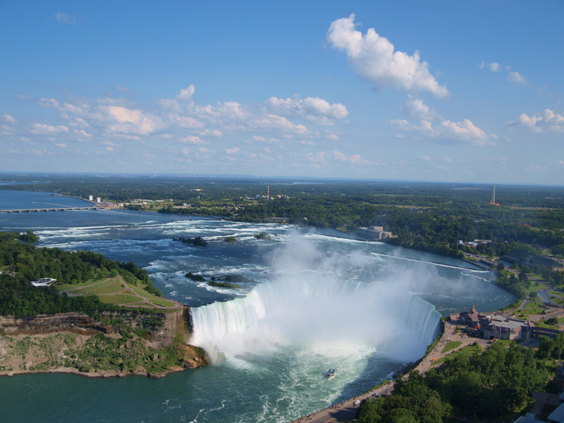

What is the biggest waterfall in the world? It depends on how you measure them! Here are the tallest, the widest, and the largest sheet of water.
This is the tallest waterfall in the world. It is in Venezuela. The name "Parakupá Vená" means "waterfall of the deepest place" in Pemon. It is also called "Angel Falls" after Jimmy Angel, who was the first to fly an airplane over the falls. "Salto Ángel" means "Angel Falls" in Spanish. When Jimmy Angel returned to the falls, he tried to land his plane, but the wheels got stuck, and it took him eleven days to walk back to civilization. The plane stayed there for 33 years.
This is the widest waterfall in the world. It is in Cambodia, and it's part of the Mekong River. It may not look that high, but it's the main reason that boats can't sail up the river to get to China. Some people also believe that it's the lartgest waterfall by volume, but it's not that easy to measure waterfalls, so we're not sure yet.
This waterfall isn't the tallest or the widest, but it has the largest curtain area, which is what you get when you multiply the height by the width. It's on the border of Zambia and Zimbabwe. The name "Mosi-oa-Tunya" means "The Smoke That Thunders" in Lozi. The name "Victoria" comes from Queen Victoria, who was queen when a Scottish missionary saw teh waterfall. He named it after her even though it already had a name, and now people use both names. The park on the Zambia side is named Mosi-oa-Tunya, and the park on the Zimbabwean side is named Victoria Falls.
Niagra Falls is very big, but it's not he biggest at anything. It does have the most visitors every year. It's on the Canadian and US border. One fun fact is that the first person to go over the falls in a barrel was a 63-year-old schoolteacher. She sent her cat over first to make sure the barrel wouldn't break. After the teacher got out of the barrel, she recommended no one else ever do that again. Other people have tried, but now it is illegal, both in Canada and in the US.